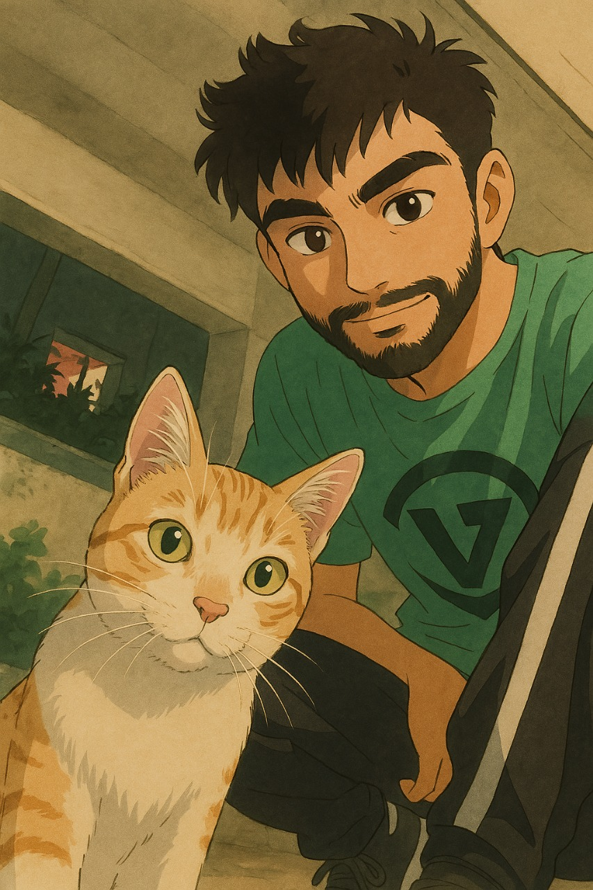

Walk in together.
The two existing walking sprites on an otherwise quiet surface. Show only while essential content is actually loading.
- No minimum animation time.
- Reduced motion: still pair.
- Asset failure: page still opens.
STORYBOARD · SUPPORTING INTERACTIONS
These are visual state references, separate from the five website sections. No progress bar, game, or forced wait.
The two existing walking sprites on an otherwise quiet surface. Show only while essential content is actually loading.


Wave once on arrival. A short walk when scrolling, then settle. Point beside the selected project or milestone.

0 / 4 → 4 / 4 → ready → reveal
One treat in Work, Journey, About, and Contact. Completion quietly enables the reward. Open it deliberately, then scratch or use Reveal image.
Try the collection and tap reveal in the preview ↗Project selection, milestone stories, themes, menu, hide guide, unique treat collection, and photo reveal. Walking is shown here as a static sprite frame; scratch gestures and loading choreography remain design specifications. The reference board shows the final reward openly so its asset and composition can be reviewed.